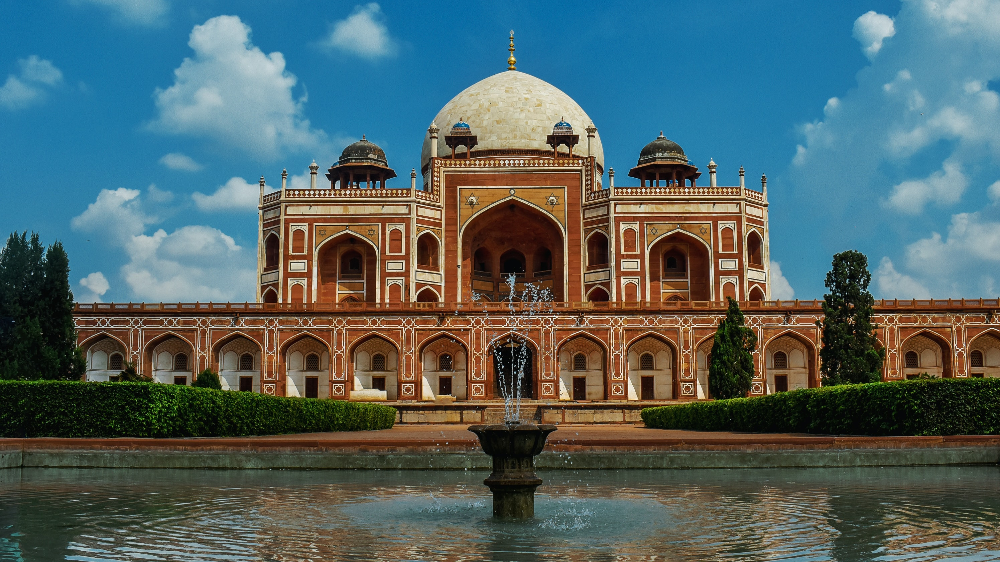
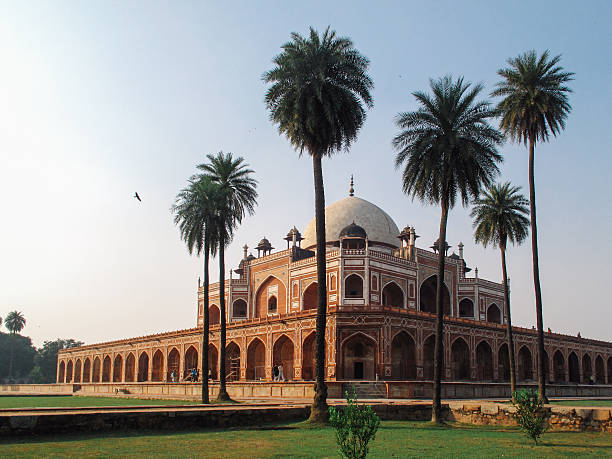
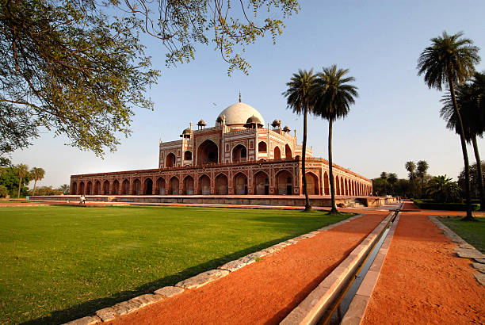
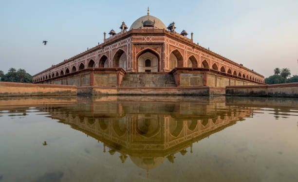
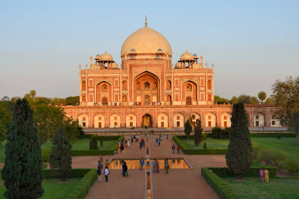

    
Humayun's tomb (Hindustani or Urdu: Maqbara-i Humayun) is the tomb of the Mughal Emperor Humayun in Delhi, India. The tomb was commissioned by Humayun's first wife and chief consort, Empress Bega Begum (also known as Haji Begum), in 1558, and designed by Mirak Mirza Ghiyas and his son, Sayyid Muhammad,[8] Persian architects chosen by her. It was the first garden-tomb on the Indian subcontinent, and is located in Nizamuddin East, Delhi, India, close to the Dina-panah Citadel, also known as Purana Qila (Old Fort), that Humayun found in 1533. It was also the first structure to use red sandstone at such a scale. The tomb was declared a UNESCO World Heritage Site in 1993, and since then has undergone extensive restoration work, which is complete.[14] Besides the main tomb enclosure of Humayun, several smaller monuments dot the pathway leading up to it, from the main entrance in the West, including one that even pre-dates the main tomb itself, by twenty years; it is the tomb complex of Isa Khan Niyazi, an Afghan noble in Sher Shah Suri's court of the Suri dynasty, who fought against the Mughals, constructed in 1547 CE. The complex encompasses the main tomb of the Emperor Humayun, which houses the graves of Empress Bega Begum, Hamida Begum, and also Dara Shikoh, great-great-grandson of Humayun and son of the later Emperor Shah Jahan, as well as numerous other subsequent Mughals, including Emperor Jahandar Shah, Farrukhsiyar, Rafi Ul-Darjat, Rafi Ud-Daulat, Muhammad Kam Bakhsh and Alamgir II. It represented a leap in Mughal architecture, and together with its accomplished Charbagh garden, typical of Persian gardens, but never seen before in India, it set a precedent for subsequent Mughal architecture. It is seen as a clear departure from the fairly modest mausoleum of his father, the first Mughal Emperor, Babur, called Bagh-e Babur (Gardens of Babur) in Kabul (Afghanistan). Though the latter was the first Emperor to start the tradition of being buried in a paradise garden.[17][18] Modelled on Gur-e Amir, the tomb of his ancestor and Asia's conqueror Timur in Samarkand, it created a precedent for future Mughal architecture of royal mausolea, which reached its zenith with the Taj Mahal, at Agra. The site was chosen on the banks of Yamuna river, due to its proximity to Nizamuddin Dargah, the mausoleum of the celebrated Sufi saint of Delhi, Nizamuddin Auliya, who was much revered by the rulers of Delhi, and whose residence, Chilla Nizamuddin Auliya lies just north-east of the tomb. In later Mughal history, the last Mughal Emperor, Bahadur Shah Zafar took refuge here, during the Indian Rebellion of 1857, along with three princes, and was captured by Captain Hodson before being exiled to Rangoon. At the time of the Slave Dynasty this land was under the 'KiloKheri Fort' which was capital of Sultan Qaiqabad, son of Nasiruddin (1268–1287). The Tombs of Battashewala Complex lie in the buffer zone of the World Heritage Site of the Humayun Tomb Complex; the two complexes are separated by a small road but enclosed within their own separate compound wall.